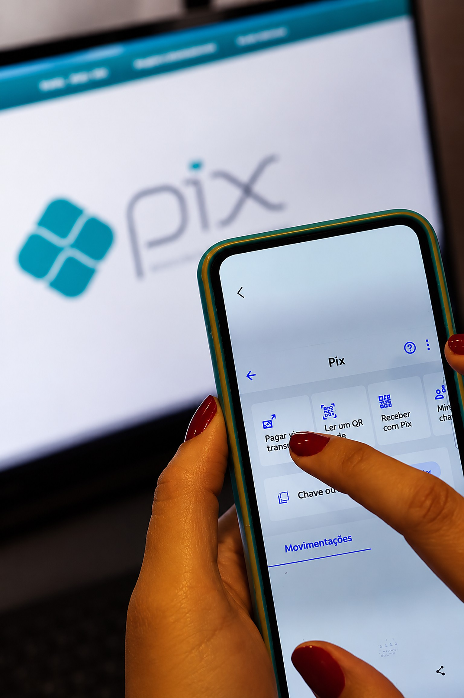
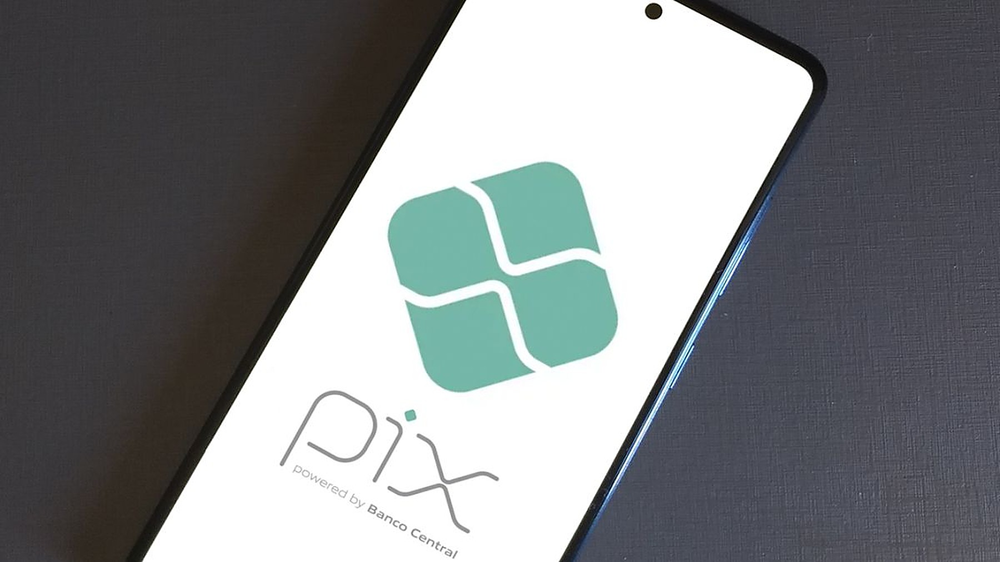
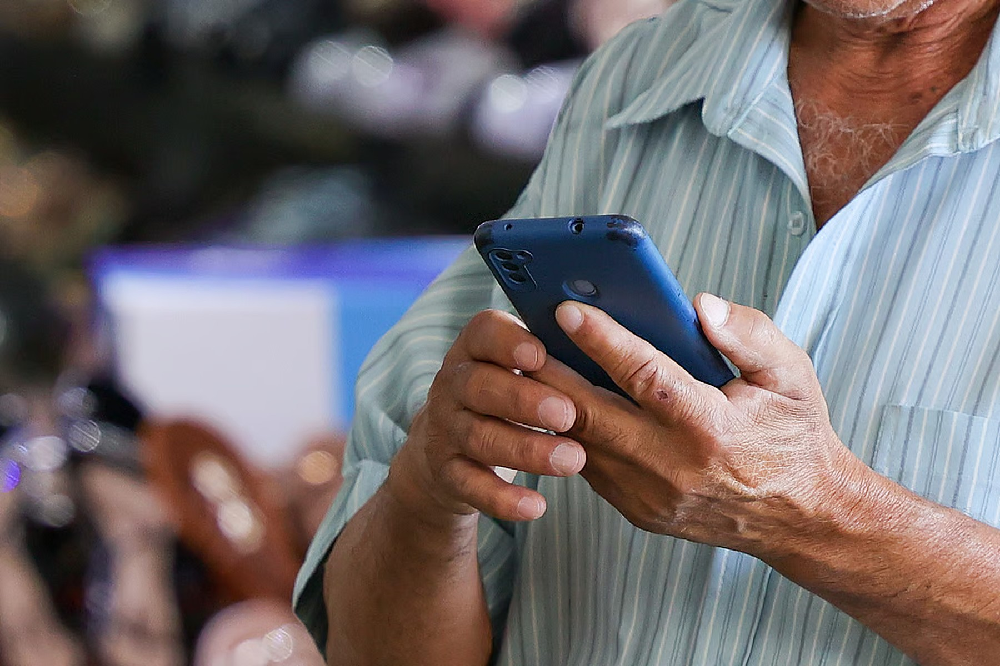

Portal de educação digital
Sua segurança digitalcomeça com a informação
Conhecimento para identificar ameaças e navegar com segurança.
Entenda os riscos. Fortaleça sua proteção.
- 9 categorias de golpes
- Simulação interativa
- Guia de emergência
Por onde começar?
Informação paraidentificar, prevenir e agir,no seu ritmo
Sua segurança começa com a informação.
Será que você reconheceria um golpe antes de cair?
Mensagens falsas parecem cada vez mais reais. Teste seu olhar em situações fictícias de SMS, WhatsApp, e-mail e anúncios, e veja na hora quais sinais de alerta você deixou passar.
- 8 situações do dia a dia
- Feedback imediato após cada resposta
- Leva menos de 3 minutos
Blog de cibersegurança
Matérias de veículos externos sobre golpes e segurança digital.
Tendências e dados
Números e panoramas que mostram como os golpes digitais avançam no Brasil.

Golpes com Pix: Febraban lista quatro tipos e ensina como evitá-losA Febraban lista quatro tipos de golpes envolvendo o Pix e orienta como evitá-los.
Golpe do Pix errado explora recurso de devolução; veja como evitarCriminosos pedem a devolução de um Pix para conta de terceiros. A Febraban orienta devolver apenas para a conta de origem.IA e engenharia social devem tornar golpes com Pix mais sofisticados em 2026Segundo a ESET, deepfakes e falsas centrais de atendimento tendem a ganhar escala; o comportamento do usuário segue sendo o maior desafio.
Engenharia social responde por 40% das fraudes financeiras no BrasilLevantamento da Quod aponta que a engenharia social responde por cerca de 40% dos indícios de fraude, com celular e Pix como principais canais.Golpes com inteligência artificial e Pix falso ameaçam compras da Black FridayA matéria alerta para golpes com IA e Pix falso na Black Friday e orienta conferir links, dados do destinatário e usar cartões virtuais.Notícias de cibersegurança de veículos externos, que abrem em nova aba. O Conecta Saber não é responsável pelo conteúdo de terceiros.
Perguntas frequentes
Respostas rápidas sobre cibersegurança para o seu dia a dia. Tire suas dúvidas antes de cair em um golpe.
Ainda tem dúvidas?
Se você já caiu em um golpe, veja agora o passo a passo do que fazer.
Guia de emergênciaO que fazer ao receber uma mensagem suspeita?
Não clique em links, não abra anexos e não responda. Confirme a informação por um canal oficial, digitando você mesmo o endereço do site ou ligando para o número oficial da empresa. Depois, apague a mensagem e, se possível, denuncie na plataforma.
Como criar uma senha segura?
Prefira frases longas, com 12 caracteres ou mais, que não tenham relação óbvia com você. Não repita a senha em contas diferentes e, se puder, use um gerenciador de senhas. Veja mais em Proteja-se.
O banco pode pedir minha senha ou um código por telefone?
Não. Bancos não pedem senha, token nem códigos de verificação por ligação, mensagem ou e-mail. Se alguém pedir, desligue e ligue você mesmo para o número oficial, que fica no verso do cartão ou no aplicativo.
Caí em um golpe. E agora?
Aja rápido: avise o banco se houve movimentação financeira, troque as senhas das contas afetadas, guarde as provas e registre um boletim de ocorrência. O passo a passo está no Guia de emergência.